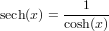
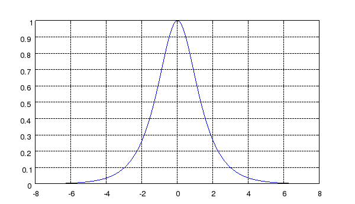

SECH Hyperbolic Secant Function
Section: Mathematical Functions
Usage
Computes the hyperbolic secant of the argument.
The syntax for its use is
y = sech(x)
Function Internals
The sech function is computed from the formula

Examples
Here is a simple plot of the hyperbolic secant function
--> x = -2*pi:.01:2*pi;
--> plot(x,sech(x)); grid('on');
